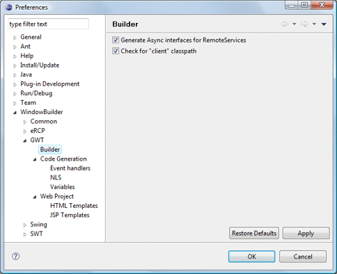

|
 This page is used to control various GWT > Builder options. Generate Async interfaces for RemoteServicesThis preference determines whether Async interfaces are automatically generated for RemoteServices Check for 'client' classpathThis preference determines whether the compiler checks for client-side compilation issues (such as using non-emulated JDK classes). |